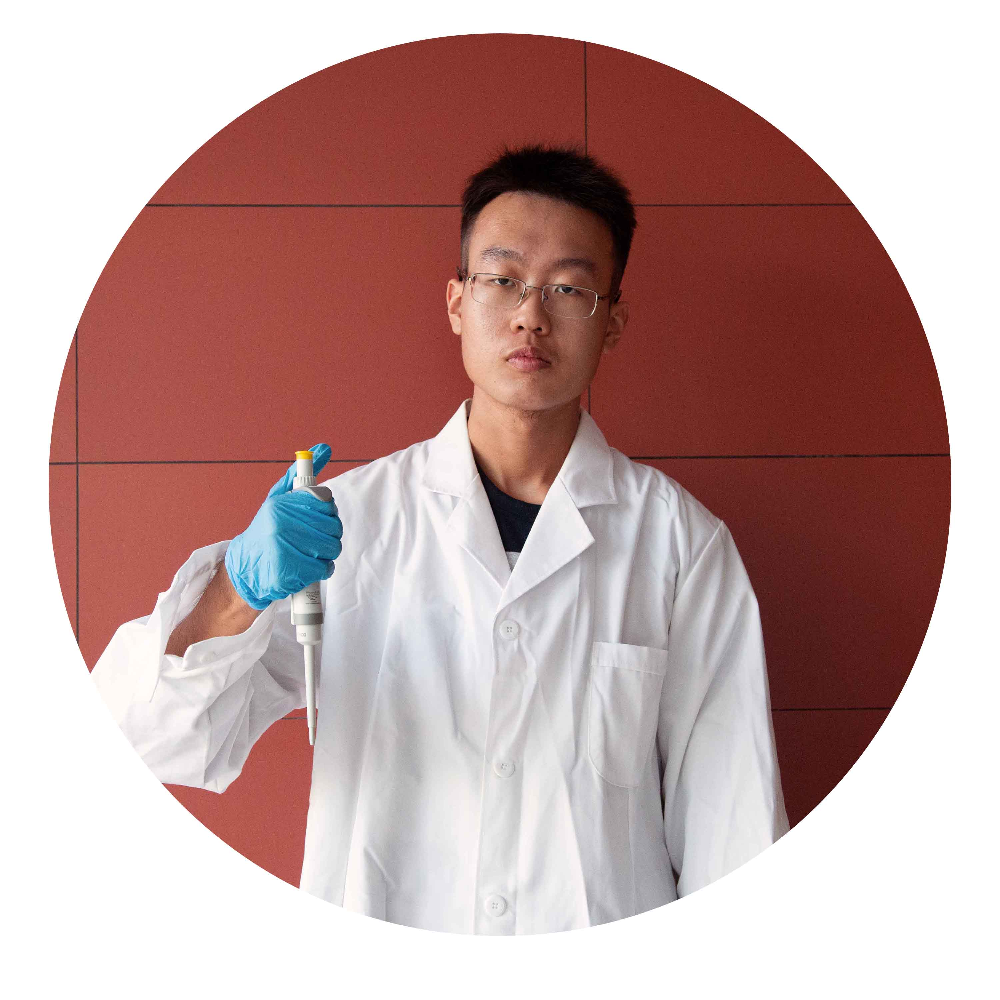

Lihan Zi
School of Bioengineering

Jun Yang
School of Bioengineering

Lulu Han
School of Bioengineering
Yichun Zhao
School of Chemical Engineering
Xue Han
School of Bioengineering

Kang Xu
School of Bioengineering

Scarlett Zhu
School of Bioengineering

GuoRui Li
School of Bioengineering
Veronica Liu
School of Bioengineering
XiangCheng Dai
School of Bioengineering
Qirui Liu
School of Bioengineering
Haotian Yu
School of Bioengineering
Yihang Ma
School of Bioengineering

Yuwen Lu
School of Software Technology
Baoming Shi
School of Mathematical Sciences
Fanhan Kong
School of Physics
Chen Di
School of Architecture & Fine Art
Siyuan Li
School of Architecture & Fine Art